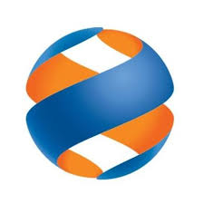
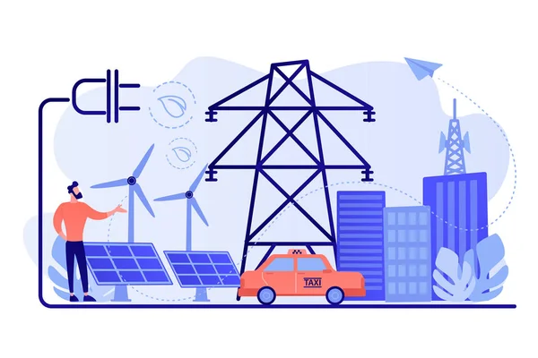
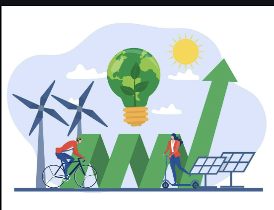

ПАО «Дальневосточная энергетическая компания» — крупнейший гарантирующий поставщик электроэнергии на территории Дальнего Востока России. Компания была основана в 2007 году и входит в структуру энергетического холдинга, обеспечивая свет и энергию для миллионов жителей и предприятий Приморья, Хабаровского края, Амурской области, ЕАО, Сахалина, Камчатки и Якутии.

ДЭК обеспечивает надежное снабжение электрической энергией потребителей в Приморском крае, Хабаровском крае, Амурской области, ЕАО, а также в ряде районов Сахалинской области, Камчатского края и Якутии.
Работа с абонентами через пункты обслуживания, Личный кабинет и онлайн-сервисы
Исполнение функций агента по расчетам за коммунальные услуги (ЖКУ) для других ресурсоснабжающих организаций.
Покупка электрической энергии на оптовом рынке и ее продажа на розничном рынке.
Формирование единых квитанций, сбор платежей за электроэнергию, а также, в некоторых регионах, за теплоснабжение и горячую воду
Подробнее можно узнать на официальном сайте: www.dvec.ru
ПАО «ДЭК» ведёт операционную деятельность с 1 февраля 2007 года и является крупнейшей энергосбытовой компанией и гарантирующим поставщиком электроэнергии для населения и бизнеса на Дальнем Востоке. Компания — преемник «Дальэнерго» (основано в 1937 году). С 1 января 2025 года регион вошёл во вторую ценовую зону оптового рынка электроэнергии и мощности. Основные функции: покупка электроэнергии на оптовом и розничных рынках и её продажа потребителям, включая территории вне ЕЭС России. ДЭК обслуживает Приморский и Хабаровский края, Амурскую область, ЕАО и Республику Саха (Якутия), а также выполняет агентские функции в Камчатском крае и Сахалинской области. В итоге компания присутствует в семи регионах Дальнего Востока. Клиентская база: 3,5 млн частных лиц и 113,5 тыс. компаний. Обслуживание ведётся в 117 офисах. Годовое потребление клиентов — около 31 млрд кВт·ч электроэнергии и 20,1 млн Гкал тепла.
Сегодня компания обслуживает миллионы клиентов и играет ключевую роль в энергоснабжении региона.
ДЭК активно внедряет цифровые технологии и онлайн-сервисы для удобства пользователей.
Развитие компании строится вокруг цифровизации клиентских сервисов. ДЭК активно внедряет интеллектуальные
системы учета, которые позволяют автоматически собирать данные и минимизировать потери. Для клиентов создана
целая экосистема: от мобильных приложений с ИИ-помощниками до современных Единых расчетных центров,
где обслуживание проходит максимально быстро благодаря автоматизации процессов.
Среди решений:
Компания уделяет большое внимание экологии и устойчивому развитию.

Основные принципы:
Компания активно переводит абонентов на электронные квитанции, что снижает потребление бумаги и, как следствие, сохраняет лесные ресурсы.
Как энергосбытовая компания, ПАО «ДЭК» входит в число наиболее экологически ответственных предприятий России, стремясь к минимизации экологического следа своей деятельности
ПАО «ДЭК» поддерживает инициативы по повышению энергоэффективности и улучшению экологической обстановки в регионах присутствия.